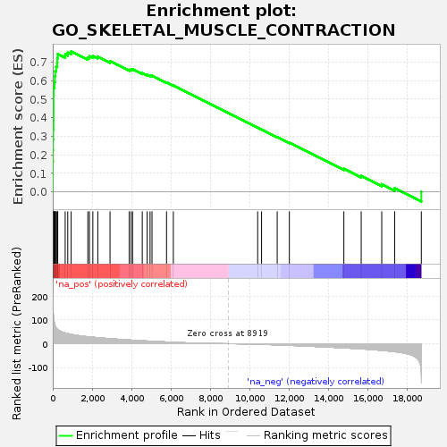
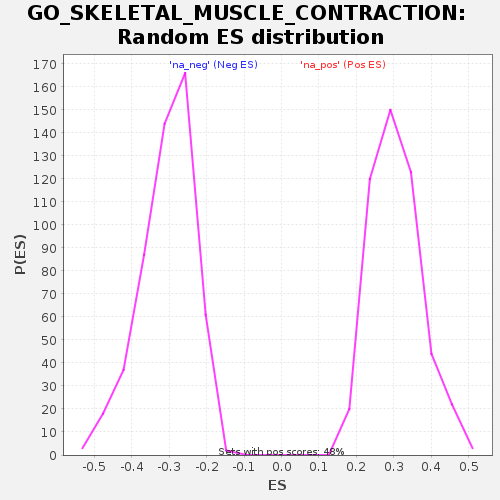

| | | Dataset | muscle.stat |
| Phenotype | NoPhenotypeAvailable |
| Upregulated in class | na_pos |
| GeneSet | GO_SKELETAL_MUSCLE_CONTRACTION |
| Enrichment Score (ES) | 0.7580904 |
| Normalized Enrichment Score (NES) | 2.4809544 |
| Nominal p-value | 0.0 |
| FDR q-value | 0.0 |
| FWER p-Value | 0.0 |
Table: GSEA Results Summary

Fig 1: Enrichment plot: GO_SKELETAL_MUSCLE_CONTRACTION
Profile of the Running ES Score & Positions of GeneSet Members on the Rank Ordered List
| SYMBOL | RANK IN GENE LIST | RANK METRIC SCORE | RUNNING ES | CORE ENRICHMENT | | 1 | STAC3 | 1 | 227.153 | 0.0899 | Yes |
| 2 | JSRP1 | 4 | 182.025 | 0.1618 | Yes |
| 3 | TNNC2 | 9 | 158.929 | 0.2245 | Yes |
| 4 | TNNI2 | 13 | 150.623 | 0.2840 | Yes |
| 5 | ATP2A1 | 20 | 133.168 | 0.3364 | Yes |
| 6 | SLC8A3 | 36 | 119.783 | 0.3830 | Yes |
| 7 | SCN4A | 38 | 116.355 | 0.4290 | Yes |
| 8 | CHRNB1 | 39 | 114.091 | 0.4742 | Yes |
| 9 | CHRND | 40 | 112.805 | 0.5189 | Yes |
| 10 | STRIT1 | 45 | 107.189 | 0.5611 | Yes |
| 11 | ACTN3 | 92 | 86.312 | 0.5928 | Yes |
| 12 | CHRNA1 | 110 | 78.667 | 0.6230 | Yes |
| 13 | TNNT1 | 128 | 74.176 | 0.6515 | Yes |
| 14 | MYH8 | 173 | 67.057 | 0.6757 | Yes |
| 15 | CASQ1 | 223 | 61.966 | 0.6976 | Yes |
| 16 | TNNT3 | 232 | 61.490 | 0.7215 | Yes |
| 17 | TNNI1 | 254 | 59.630 | 0.7440 | Yes |
| 18 | EEF2 | 633 | 45.300 | 0.7417 | Yes |
| 19 | MYH3 | 762 | 42.537 | 0.7517 | Yes |
| 20 | MYH14 | 936 | 39.472 | 0.7581 | Yes |
| 21 | CAV3 | 1784 | 29.464 | 0.7244 | No |
| 22 | CHUK | 1865 | 28.753 | 0.7316 | No |
| 23 | SYNM | 2037 | 27.400 | 0.7333 | No |
| 24 | DMD | 2289 | 25.363 | 0.7299 | No |
| 25 | GSTM2 | 2911 | 21.241 | 0.7051 | No |
| 26 | ATP2A2 | 3883 | 15.617 | 0.6593 | No |
| 27 | RCSD1 | 3982 | 15.195 | 0.6601 | No |
| 28 | STAC | 4059 | 14.771 | 0.6619 | No |
| 29 | MB | 4550 | 12.486 | 0.6406 | No |
| 30 | GAA | 4799 | 11.405 | 0.6318 | No |
| 31 | HOMER1 | 4946 | 10.801 | 0.6283 | No |
| 32 | TNNC1 | 5044 | 10.314 | 0.6272 | No |
| 33 | TCAP | 5783 | 7.290 | 0.5906 | No |
| 34 | ATP8A2 | 6129 | 5.915 | 0.5745 | No |
| 35 | MYH7 | 10414 | -2.114 | 0.3462 | No |
| 36 | PVALEF | 10612 | -2.571 | 0.3366 | No |
| 37 | DMPK | 11407 | -4.889 | 0.2961 | No |
| 38 | STAC2 | 12025 | -6.921 | 0.2658 | No |
| 39 | C12orf57 | 14795 | -17.513 | 0.1247 | No |
| 40 | GSTO1 | 15676 | -21.728 | 0.0862 | No |
| 41 | KCNJ2 | 16720 | -27.897 | 0.0414 | No |
| 42 | CCDC78 | 17376 | -33.351 | 0.0196 | No |
| 43 | TNNI3 | 18732 | -134.126 | 0.0002 | No |
Table: GSEA details [plain text format]

Fig 2: GO_SKELETAL_MUSCLE_CONTRACTION: Random ES distribution
Gene set null distribution of ES for GO_SKELETAL_MUSCLE_CONTRACTION